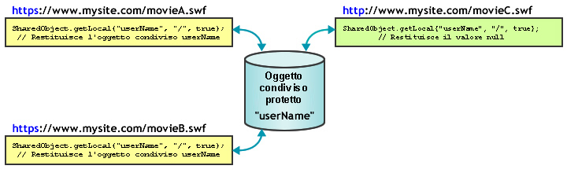

| Pacchetto | flash.net |
| Classe | public class SharedObject |
| Ereditarietà | SharedObject |
| Versione linguaggio: | ActionScript 3.0 |
| Versioni runtime: | AIR 1.0, Flash Player 9, Flash Lite 4 |
Utilizzate oggetti condivisi per le seguenti azioni:
-
Mantenere la permanenza in locale. Si tratta del modo più semplice di utilizzo di un oggetto condiviso, e non richiede Flash Media Server. Ad esempio, potete chiamare
SharedObject.getLocal()per creare in un'applicazione un oggetto condiviso, ad esempio una calcolatrice con memoria. Quando l'utente chiude la calcolatrice, Flash Player salva l'ultimo valore in un oggetto condiviso nel computer dell'utente. Al suo successivo utilizzo, la calcolatrice conterrà i valori che aveva al momento della chiusura. In alternativa, se si impostano le proprietà dell'oggetto condiviso sunullprima che l'applicazione venga chiusa, al successivo utilizzo dell'applicazione, quest'ultima si apre senza valori precedenti. Un altro esempio di mantenimento della permanenza locale consiste nel tenere traccia delle preferenze o di altri dati di un utente per un sito Web complesso, ad esempio un registro degli articoli letti dall'utente in un sito di notizie. La traccia di queste informazioni consente di visualizzare gli articoli già letti in modo diverso da quelli nuovi e non ancora letti. La memorizzazione di queste informazioni nel computer dell'utente riduce il carico del server. -
Archiviare e condividere dati sul Flash Media Server. Un oggetto condiviso può archiviare dati sul server così da renderli disponibili per altri client. È possibile, ad esempio, chiamare
SharedObject.getRemote()per creare un oggetto condiviso remoto, quale un elenco di numeri di telefono, che sia permanente sul server. Ogniqualvolta un client effettua delle modifiche sull'oggetto condiviso, i dati modificati vengono resi disponibili a tutti i client connessi in quel momento all'oggetto o che vi si connettono in un secondo momento. Se l'oggetto in questione è permanente anche in locale, e un client modifica i dati quando non è connesso al server, i dati verranno copiati sull'oggetto condiviso remoto alla prima connessione del client all'oggetto stesso. - Condidere i dati in tempo reale. Un oggetto condiviso è in grado di condividere dati tra più client in tempo reale. Ad esempio, è possibile aprire un oggetto condiviso remoto che memorizza l'elenco di utenti connessi a una chat room visibile a tutti i client connessi all'oggetto. Quando un utente entra o esce da una chat room, l'oggetto viene aggiornato e tutti i client che sono connessi a esso visualizzano l'elenco riveduto degli utenti della chat room.
Per creare un oggetto condiviso locale chiamate SharedObject.getLocal(). Per creare un oggetto condiviso remoto, chiamate SharedObject.getRemote().
Alla chiusura dell'applicazione gli oggetti condivisi vengono svuotati, oppure scritti su un disco. È anche possibile richiamare il metodo flush() in modo da scrivere esplicitamente i dati su un disco.
Considerazioni sullo spazio su disco locale. Gli oggetti condivisi in locale hanno delle limitazioni che è importante considerare nella progettazione dell'applicazione. A volte, ai file SWF può non essere consentito scrivere oggetti condivisi locali; inoltre è possibile che i dati memorizzati in oggetti condivisi locali vengano eliminati senza darne notifica all'utente. Gli utenti di Flash Player possono gestire lo spazio disponibile sul disco per singoli domini o per tutti i domini. Se gli utenti riducono la quantità di spazio disponibile, è possibile che alcuni oggetti condivisi locali vengano eliminati. Gli utenti di Flash Player dispongono inoltre di controlli per la riservatezza che possono impedire a domini di terze parti (ovvero domini diversi dal dominio presente attualmente nella barra degli indirizzi del browser) di leggere o scrivere oggetti condivisi locali. Notate anche che in Mac OS, a partire da AIR 3.3, la posizione degli oggetti condivisi locali è cambiata, quindi se effettuate l’aggiornamento allo spazio dei nomi 3.3, potrebbe sembrarvi che gli oggetti siano stati persi.
Nota: i file SWF memorizzati ed eseguiti su un computer locale e non da un server remoto possono sempre scrivere degli oggetti condivisi con terzi sul disco. Per ulteriori informazioni sugli oggetti condivisi di terze parti, vedete Pannello Impostazioni generali della memorizzazione nella Guida di Flash Player.
È opportuno controllare anche la non riuscita dell'operazione dovuta alla quantità di spazio su disco e ai controlli per la riservatezza dell'utente. Eseguite questi controlli quando chiamate getLocal() e flush():
-
SharedObject.getLocal()- Flash Player genera un'eccezione quando una chiamata a questo metodo non riesce, ad esempio quando l'utente ha disattivato oggetti condivisi di terze parti e il dominio del file SWF non corrisponde al dominio indicato nella barra degli indirizzi del browser. -
SharedObject.flush()- Flash Player genera un'eccezione quando una chiamata a questo metodo non riesce. Se la chiamata riesce, restituisceSharedObjectFlushStatus.FLUSHED. RestituisceSharedObjectFlushStatus.PENDINGquando è richiesto spazio di memorizzazione aggiuntivo. Flash Player richiede all'utente di consentire un aumento di spazio di memorizzazione per tutte le informazioni salvate a livello locale. A quel punto, l'eventonetStatusviene inviato con un oggetto informazione che indica se lo svuotamento ha dato esito positivo o negativo.
Se il file SWF tenta di creare o modificare oggetti condivisi locali, assicurarsi che le dimensioni di questo file siano di almeno 215 pixel di larghezza e 138 pixel di altezza, che corrispondono alle dimensioni minime per la visualizzazione della finestra di dialogo mediante la quale viene chiesto all'utente di aumentare il limite dell'area di memorizzazione degli oggetti condivisi locali. Se le dimensioni del file SWF sono inferiori ed è richiesto un aumento del limite di memorizzazione, SharedObject.flush() non viene completato e restituisce SharedObjectFlushedStatus.PENDING e invia l'evento netStatus.
Oggetti condivisi remoti. Con Flash Media Server è possibile creare e utilizzare oggetti condivisi remoti che vengano condivisi in tempo reale da tutti i client connessi all'applicazione. Quando uno dei client modifica una proprietà di un oggetto condiviso remoto, la proprietà viene modificata per tutti i client connessi. Potete utilizzare degli oggetti condivisi remoti per sincronizzare i client, come ad esempio degli utenti in un gioco multi-player.
Ogni oggetto condiviso remoto ha una proprietà data che è un oggetto con delle proprietà capaci di archiviare dati. Chiamate setProperty() per modificare una proprietà dell' oggetto dati. Il server aggiorna le proprietà, invia un evento sync e quindi reinvia di rimando le proprietà ai client connessi.
È possibile scegliere di rendere gli oggetti condivisi remoti permanenti sul client, sul server o su entrambi. Flash Player salva localmente gli oggetti condivisi remoti permanente con di dimensione inferiore ai 100 Kb. Se tentate di salvare un oggetto con dimensioni superiori, Flash Player visualizza la finestra di dialogo Archiviazione locale, che permette all'utente di consentire o negare la memorizzazione locale l'oggetto condiviso. Assicuratevi che le dimensioni dello stage siano almeno di 215 x 138 pixel, ovvero le dimensioni minime richieste da Flash per visualizzare la finestra di dialogo.
Se l'utente sceglie l'opzione Allow, il server salva l'oggetto condiviso e invia un evento netStatus con la proprietà code impostata su SharedObject.Flush.Success. Se l'utente sceglie l'opzione Deny, il server non salva l'oggetto condiviso e invia un evento netStatus con la proprietà code impostata su SharedObject.Flush.Failed.
Elementi API correlati
 Nascondi proprietà pubbliche ereditate
Nascondi proprietà pubbliche ereditate Mostra proprietà pubbliche ereditate
Mostra proprietà pubbliche ereditate| Proprietà | Definito da | ||
|---|---|---|---|
| client : Object
Indica l'oggetto su cui vengono chiamati i metodi di callback. | SharedObject | ||
 | constructor : Object
Un riferimento all'oggetto classe o alla funzione di costruzione per una determinata istanza di oggetto. | Object | |
| data : Object [sola lettura]
La raccolta degli attributi assegnati alla proprietà data dell'oggetto; questi attributi possono essere condivisi e memorizzati. | SharedObject | ||
| defaultObjectEncoding : uint [statico]
La codifica oggetto predefinita (versione AMF) per tutti gli oggetti condivisi locali creati nel file SWF. | SharedObject | ||
| fps : Number [sola scrittura]
Specifica il numero di volte al secondo per cui le modifiche di un client a un oggetto condiviso vengono inviate al server. | SharedObject | ||
| objectEncoding : uint
La codifica oggetto (versione AMF) per questo oggetto condiviso. | SharedObject | ||
| preventBackup : Boolean [statico]
Specifica se gli oggetti condivisi locali verranno sottoposti a backup nel servizio di backup cloud iOS. | SharedObject | ||
| size : uint [sola lettura]
Le dimensioni correnti dell'oggetto condiviso, espresse in byte. | SharedObject | ||
| Metodo | Definito da | ||
|---|---|---|---|
| addEventListener(type:String, listener:Function, useCapture:Boolean = false, priority:int = 0, useWeakReference:Boolean = false):void
Registra un oggetto listener di eventi con un oggetto EventDispatcher, in modo che il listener riceva la notifica di un evento. | EventDispatcher | |
Per gli oggetti condivisi locali, tutti i dati vengono scaricati e l'oggetto condiviso viene eliminato dal disco. | SharedObject | ||
Chiude la connessione tra un oggetto condiviso remoto e il server. | SharedObject | ||
Si connette a un oggetto condiviso remoto sul server utilizzando l'oggetto NetConnection specificato. | SharedObject | ||
|
Invia un evento nel flusso di eventi. | EventDispatcher | |
Scrive immediatamente in un file locale un oggetto condiviso persistente a livello locale. | SharedObject | ||
[statico]
Restituisce un riferimento a un oggetto condiviso permanente a livello locale che è disponibile solo per il client corrente. | SharedObject | ||
getRemote(name:String, remotePath:String = null, persistence:Object = false, secure:Boolean = false):SharedObject [statico]
Restituisce un riferimento a un oggetto condiviso sul Flash Media Server accessibile da parte di più client. | SharedObject | ||
|
Verifica se per l'oggetto EventDispatcher sono presenti listener registrati per un tipo specifico di evento. | EventDispatcher | |
|
Indica se per un oggetto è definita una proprietà specifica. | Object | |
|
Indica se un'istanza della classe Object si trova nella catena di prototipi dell'oggetto specificato come parametro. | Object | |
|
Indica se la proprietà specificata esiste ed è enumerabile. | Object | |
|
Rimuove un listener dall'oggetto EventDispatcher. | EventDispatcher | |
Trasmette un messaggio a tutti i client connessi ad un oggetto condiviso remoto, compreso il client che ha inviato il messaggio. | SharedObject | ||
Indica al server che il valore di una proprietà nell'oggetto condiviso è cambiato. | SharedObject | ||
Aggiorna il valore di una proprietà in un oggetto condiviso e indica al server che il valore della proprietà è cambiato. | SharedObject | ||
|
Imposta la disponibilità di una proprietà dinamica per le operazioni cicliche. | Object | |
|
Restituisce la rappresentazione in formato stringa di questo oggetto, formattato in base alle convenzioni specifiche per le versioni localizzate. | Object | |
|
Restituisce la rappresentazione in formato stringa dell'oggetto specificato. | Object | |
|
Restituisce il valore di base dell'oggetto specificato. | Object | |
|
Verifica se un listener di eventi è registrato con questo oggetto EventDispatcher o qualsiasi suo antenato per il tipo di evento specificato. | EventDispatcher | |
| Evento | Riepilogo | Definito da | ||
|---|---|---|---|---|
| [evento di trasmissione] Inviato quando Flash Player o l'applicazione AIR ottiene lo stato di attivazione del sistema operativo ed entra nello stato attivo. | EventDispatcher | ||
| Inviato quando viene generata un'eccezione in modo asincrono, cioè da un codice asincrono nativo. | SharedObject | |||
| [evento di trasmissione] Inviato quando Flash Player o l'applicazione AIR perde l'attivazione del sistema operativo e sta entrando nello stato inattivo. | EventDispatcher | ||
| Inviato quando un'istanza di SharedObject segnala il proprio stato o una condizione di errore. | SharedObject | |||
| Inviato quando un oggetto condiviso remoto è stato aggiornato dal server. | SharedObject | |||
client | proprietà |
client:Object| Versione linguaggio: | ActionScript 3.0 |
| Versioni runtime: | AIR 1.0, Flash Player 9, Flash Lite 4 |
Indica l'oggetto su cui vengono chiamati i metodi di callback. L'oggetto predefinito è this. È possibile impostare la proprietà su un altro oggetto, e i metodi di callback vengono richiamati su tale oggetto.
Implementazione
public function get client():Object public function set client(value:Object):voidGenera
TypeError — La proprietà client deve essere impostata su un oggetto diverso da null.
|
data | proprietà |
data:Object [sola lettura] | Versione linguaggio: | ActionScript 3.0 |
| Versioni runtime: | AIR 1.0, Flash Player 9, Flash Lite 4 |
La raccolta degli attributi assegnati alla proprietà data dell'oggetto; questi attributi possono essere condivisi e memorizzati. Ogni attributo può essere un oggetto di un tipo ActionScript o JavaScript di base: Array, Number, Boolean, ByteArray, XML, e così via. Ad esempio, le righe seguenti assegnano dei valori ai vari aspetti di un oggetto condiviso:
var items_array:Array = new Array(101, 346, 483);
var currentUserIsAdmin:Boolean = true;
var currentUserName:String = "Ramona";
var my_so:SharedObject = SharedObject.getLocal("superfoo");
my_so.data.itemNumbers = items_array;
my_so.data.adminPrivileges = currentUserIsAdmin;
my_so.data.userName = currentUserName;
for (var prop in my_so.data) {
trace(prop+": "+my_so.data[prop]);
}
Tutti gli attributi della proprietà data di un oggetto condiviso vengono salvati se l'oggetto è persistente, e l'oggetto condiviso contiene le informazioni seguenti:
userName: Ramona
adminPrivileges: true
itemNumbers: 101,346,483
Nota: non assegnate direttamente dei valori alla proprietà data di un oggetto condiviso, come in so.data = someValue poiché Flash ignora tali assegnazioni.
Per eliminare gli attributi degli oggetti condivisi locali, utilizzate un codice simile a delete so.data.attributeName; se impostate l'attributo di un oggetto locale condiviso su null o undefined, l'attributo non viene eliminato.
Per creare valori private per un oggetto condiviso (ovvero valori disponibili solo per l'istanza del client mentre l'oggetto è in uso e che non vengono memorizzati quando viene chiuso), memorizzateli creando proprietà con nomi diversi da data, come nell'esempio seguente:
var my_so:SharedObject = SharedObject.getLocal("superfoo");
my_so.favoriteColor = "blue";
my_so.favoriteNightClub = "The Bluenote Tavern";
my_so.favoriteSong = "My World is Blue";
for (var prop in my_so) {
trace(prop+": "+my_so[prop]);
}
L'oggetto condiviso contiene i dati seguenti:
favoriteSong: My World is Blue
favoriteNightClub: The Bluenote Tavern
favoriteColor: blue
data: [object Object]
Per gli oggetti condivisi remoti utilizzati in un server, tutti gli attributi della proprietà data sono disponibili per tutti I client connesso all'oggetto condiviso e tutti gli attributi vengono salvati se l'oggetto è permanente. Se un client modifica il valore di un attributo, tutti i client possono immediatamente vedere quel nuovo valore.
Implementazione
public function get data():ObjectElementi API correlati
defaultObjectEncoding | proprietà |
defaultObjectEncoding:uint| Versione linguaggio: | ActionScript 3.0 |
| Versioni runtime: | AIR 1.0, Flash Player 9, Flash Lite 4 |
La codifica oggetto predefinita (versione AMF) per tutti gli oggetti condivisi locali creati nel file SWF. Quando gli oggetti condivisi locali vengono scritti su disco, la proprietà SharedObject.defaultObjectEncoding indica quale versione di Action Message Format deve essere utilizzata: il formato ActionScript 3.0 (AMF3) o il formato ActionScript 1.0 o 2.0 (AMF0).
Per ulteriori informazioni sulla codifica degli oggetti, compresa la differenza tra la codifica degli oggetti condivisi locali e remoti, vedete la descrizione della proprietà objectEncoding.
Il valore predefinito di SharedObject.defaultObjectEncoding è impostato per utilizzare il formato ActionScript 3.0, AMF3. Se è necessario scrivere oggetti condivisi locali che siano leggibili dai file SWF in ActionScript 2.0 o 1.0, impostate SharedObject.defaultObjectEncoding affinché utilizzi il formato ActionScript 1.0 o ActionScript 2.0, flash.net.ObjectEncoding.AMF0, all'inizio dello script, prima di creare qualunque oggetto condiviso locale. Tutti gli oggetti condivisi locali creati successivamente utilizzeranno la codifica AMF0 e potranno interagire con contenuti di versioni precedenti. Non è possibile modificare il valore objectEncoding degli oggetti condivisi locali esistenti impostando SharedObject.defaultObjectEncoding dopo che sono stati creati gli oggetti condivisi locali.
Per impostare la codifica oggetto in base al singolo oggetto anziché per tutti gli oggetti condivisi creati dal file SWF, impostate la proprietà objectEncoding dell'oggetto condiviso locale.
Implementazione
public static function get defaultObjectEncoding():uint public static function set defaultObjectEncoding(value:uint):voidElementi API correlati
fps | proprietà |
fps:Number [sola scrittura] | Versione linguaggio: | ActionScript 3.0 |
| Versioni runtime: | AIR 1.0, Flash Player 9, Flash Lite 4 |
Specifica il numero di volte al secondo per cui le modifiche di un client a un oggetto condiviso vengono inviate al server.
Utilizzate questo metodo per controllare la quantità di traffico tra il client e il server. Ad esempio, se la connessione tra il client e il server è relativamente lenta, è possibile impostare fps su un valore relativamente basso. Al contrario, se il client è connesso a un'applicazione multiutente in cui i tempi sono importanti, è possibile impostare fps su un valore relativamente alto.
Se impostate fps, verrà attivato l'evento sync e verranno aggiornate tutte le modifiche sul server. Se desiderate solo aggiornare il server manualmente, impostate fps su 0.
Le modifiche non vengono inviate al server finché non è stato inviato l'evento sync. In altre parole, se il tempo di risposta da parte del server è lento, è possibile che gli aggiornamenti vengano inviati al server con minore frequenza rispetto al valore specificato in questa proprietà.
Implementazione
public function set fps(value:Number):voidobjectEncoding | proprietà |
objectEncoding:uint| Versione linguaggio: | ActionScript 3.0 |
| Versioni runtime: | AIR 1.0, Flash Player 9, Flash Lite 4 |
La codifica oggetto (versione AMF) per questo oggetto condiviso. Quando gli oggetti condivisi locali vengono scritti su disco, la proprietà objectEncoding indica quale versione di Action Message Format deve essere utilizzata: il formato ActionScript 3.0 (AMF3) o il formato ActionScript 1.0 o 2.0 (AMF0).
La codifica dell'oggetto viene gestita in modo diverso a seconda che l'oggetto condiviso sia locale o remoto.
- Oggetti condivisi locali. È possibile ottenere o impostare il valore della proprietà
objectEncodingper gli oggetti condivisi locali. Il valore diobjectEncodinginfluisce sulla formattazione utilizzata per scrivere questo oggetto condiviso locale. Se questo oggetto condiviso locale deve essere leggibile dai file SWF in ActionScript 2.0 o 1.0, impostateobjectEncodingsuObjectEncoding.AMF0. Anche se la codifica dell'oggetto è impostata per scrivere in formato AMF3, Flash Player è sempre in grado di leggere gli oggetti condivisi locali in formato AMF0. In altre parole, se utilizzate il valore predefinito di questa proprietà,ObjectEncoding.AMF3, il file SWF è ancora in grado di leggere gli oggetti condivisi creati dai file SWF in ActionScript 2.0 o 1.0. - Oggetti condivisi remoti. Quando è connesso al server, un oggetto condiviso remoto eredita le impostazioni di
objectEncodingdall'istanza NetConnection associata (l'istanza utilizzata per connettersi all'oggetto condiviso remoto). Quando non è connesso al server, un oggetto condiviso remoto eredita l'impostazione didefaultObjectEncodingdall'istanza NetConnection associata. Dal momento che il valore della proprietàobjectEncodingdi un oggetto condiviso remoto è determinato dall'istanza NetConnection, per gli oggetti condivisi remoti questa proprietà è di sola lettura.
Implementazione
public function get objectEncoding():uint public function set objectEncoding(value:uint):voidGenera
ReferenceError — Avete tentato di impostare il valore della proprietà objectEncoding su un oggetto condiviso remoto. Questa proprietà è di sola lettura per gli oggetti condivisi remoti, poiché il suo valore è determinato dall'istanza NetConnection associata.
|
Elementi API correlati
preventBackup | proprietà |
preventBackup:Boolean| Versione linguaggio: | ActionScript 3.0 |
| Versioni runtime: | AIR 3.7 |
Specifica se gli oggetti condivisi locali verranno sottoposti a backup nel servizio di backup cloud iOS.
Specificare true o false:
- true: impedisce che tutti gli oggetti condivisi locali siano sottoposti a backup nel servizio cloud di backup iOS.
- false (impostazione predefinita): gli oggetti locali condivisi verranno sottoposti a backup nel servizio cloud di backup iOS.
Questa proprietà si applica solo agli oggetti locali condivisi ed è valida solo per iOS.
Implementazione
public static function get preventBackup():Boolean public static function set preventBackup(value:Boolean):voidsize | proprietà |
size:uint [sola lettura] | Versione linguaggio: | ActionScript 3.0 |
| Versioni runtime: | AIR 1.0, Flash Player 9, Flash Lite 4 |
Le dimensioni correnti dell'oggetto condiviso, espresse in byte.
Flash calcola le dimensioni di un oggetto condiviso scorrendone tutte le proprietà data; maggiore è il numero di proprietà data dell'oggetto, maggiore è il tempo richiesto per stimarne le dimensioni. La stima delle dimensioni di un oggetto può richiedere un tempo di elaborazione significativo, pertanto è consigliabile evitare di utilizzare questo metodo se non è specificamente necessario.
Implementazione
public function get size():uintAltri esempi
Esempio ( Come utilizzare questo esempio )
"thehobbit". Una proprietà di nome username viene aggiunta alla proprietà data dell'oggetto SharedObject. La proprietà size viene quindi tracciata e viene restituito il valore indicato.
import flash.net.SharedObject;
// if these get copied or not
var mySo:SharedObject = SharedObject.getLocal("thehobbit");
mySo.data.username = "bilbobaggins";
trace(mySo.size); // 55
clear | () | metodo |
public function clear():void| Versione linguaggio: | ActionScript 3.0 |
| Versioni runtime: | AIR 1.0, Flash Player 9, Flash Lite 4 |
Per gli oggetti condivisi locali, tutti i dati vengono scaricati e l'oggetto condiviso viene eliminato dal disco. Il riferimento all'oggetto condiviso è ancora attivo, ma tutte le relative proprietà data vengono eliminate.
Per gli oggetti condivisi remoti utilizzati con Flash Media Server, clear() disconnette l'oggetto e rimuove tutti i dati. Se l'oggetto condiviso è permanente in locale questo metodo elimina l'oggetto condiviso anche dal disco. Il riferimento all'oggetto condiviso è ancora attivo, ma tutte le relative proprietà data vengono eliminate.
Esempio ( Come utilizzare questo esempio )
hostName. Una proprietà di nome username viene aggiunta alla proprietà data dell'oggetto SharedObject. Viene infine chiamato il metodo clear() che cancella tutte le informazioni che sono state aggiunte all'oggetto data (in questo caso, una sola proprietà di nome username).
package {
import flash.net.SharedObject;
public class SharedObject_clear {
private var hostName:String = "yourDomain";
private var username:String = "yourUsername";
public function SharedObject_clear() {
var mySo:SharedObject = SharedObject.getLocal(hostName);
if(mySo.data.username == null) {
mySo.data.username = username;
trace("set: " + mySo.data.username); // yourUsername
}
else {
mySo.clear();
trace("cleared: " + mySo.data.username); // undefined
}
}
}
}
close | () | metodo |
public function close():void| Versione linguaggio: | ActionScript 3.0 |
| Versioni runtime: | AIR 1.0, Flash Player 9, Flash Lite 4 |
Chiude la connessione tra un oggetto condiviso remoto e il server. Se un oggetto condiviso remoto è permanente a livello locale, l'utente può apportare delle modifiche alla copia locale dell'oggetto dopo che è stato chiamato questo metodo. Tutte le modifiche apportate all'oggetto locale vengono inviate al server alla successiva connessione all'oggetto condiviso remoto da parte dell'utente.
connect | () | metodo |
public function connect(myConnection:NetConnection, params:String = null):void| Versione linguaggio: | ActionScript 3.0 |
| Versioni runtime: | AIR 1.0, Flash Player 9, Flash Lite 4 |
Si connette a un oggetto condiviso remoto sul server utilizzando l'oggetto NetConnection specificato. Utilizzate questo metodo dopo aver richiamato getRemote(). Quando la connessione avviene correttamente viene inviato l'evento sync.
Prima di provare a lavorare con un oggetto condiviso remoto, verificate se sono presenti errori utilizzando un'istruzione try.catch..finally. Quindi intercettate e gestite l'evento sync prima di effettuare modifiche all'oggetto condiviso. Qualsiasi modifica effettuata localmente prima che l'evento sync venga inviato, potrebbe essere persa.
Chiamate il metodo connect() per connettervi a un oggetto condiviso remoto, per esempio:
var myRemoteSO:SharedObject = SharedObject.getRemote("mo", myNC.uri, false);
myRemoteSO.connect(myNC);
Parametri
myConnection:NetConnection — Oggetto NetConnection che utilizza il Real-Time Messaging Protocol (RTMP), come l'oggetto NetConnection utilizzato per comunicare con il Flash Media Server.
| |
params:String (default = null) |
Genera
Error — Impossibile connettersi all'oggetto condiviso remoto specificato. Verificate che l'istanza NetConnection sia valida e connessa e che l'oggetto condiviso remoto sia stato creato correttamente sul server.
|
Elementi API correlati
flush | () | metodo |
public function flush(minDiskSpace:int = 0):String| Versione linguaggio: | ActionScript 3.0 |
| Versioni runtime: | AIR 1.0, Flash Player 9, Flash Lite 4 |
Scrive immediatamente in un file locale un oggetto condiviso persistente a livello locale. Se non utilizzate questo metodo, l'oggetto condiviso viene scritto in un file quando termina la sessione corrispondente, ovvero quando viene chiuso il file SWF, quando l'oggetto condiviso viene spostato nel Cestino perché non esistono più riferimenti ad esso oppure quando chiamate SharedObject.clear() o SharedObject.close().
Se questo metodo restituisce il valore SharedObjectFlushStatus.PENDING, Flash Player visualizza una finestra di dialogo che richiede all'utente di aumentare la quantità di spazio disponibile su disco per gli oggetti di questo dominio. Per allocare spazio entro cui potranno aumentare le dimensioni dell'oggetto condiviso con i successivi salvataggi ed evitare quindi che venga restituito il valore PENDING, passate un valore per minDiskSpace. Quando Flash Player tenta di scrivere il file, viene effettuata la ricerca del numero di byte passati a minDiskSpace anziché la verifica dello spazio libero sufficiente per salvare l'oggetto condiviso con le dimensioni effettive.
Ad esempio, se prevedete che un oggetto condiviso raggiunga dimensioni massime di 500 byte anche se all'inizio ha dimensioni più ridotte, passate 500 per minDiskSpace. In tal caso, all'utente viene richiesto di assegnare 500 byte di spazio su disco per l'oggetto condiviso. Una volta che l'utente ha allocato la quantità di spazio richiesta, non sarà più necessario richiedere altro spazio in occasione dei successivi tentativi di scaricare l'oggetto (fintanto che le dimensioni dell'oggetto non superano i 500 byte).
Dopo che l'utente risponde alla finestra di dialogo, questo metodo viene nuovamente richiamato. Viene inviato un evento netStatus con la proprietà code impostata su SharedObject.Flush.Success o SharedObject.Flush.Failed.
Parametri
minDiskSpace:int (default = 0) |
String — Uno dei valori seguenti:
|
Genera
Error — Flash Player non è in grado di scrivere l'oggetto condiviso su disco. Questo errore può verificarsi se l'utente ha disattivato in modo permanente la memorizzazione locale delle informazioni per gli oggetti provenienti da questo dominio.
Nota: i contenuti locali possono sempre scrivere sul disco oggetti condivisi di domini di terze parti (ovvero di domini diversi da quello attualmente visualizzato nella barra degli indirizzi del browser), anche se la scrittura su disco di oggetti condivisi di terze parti non è consentita. |
Altri esempi
Elementi API correlati
Esempio ( Come utilizzare questo esempio )
hostName. Una proprietà di nome username viene aggiunta alla proprietà data dell'oggetto SharedObject. Viene quindi chiamato il metodo flush() seguito dalla verifica che sia stata restituita la stringa pending o un valore booleano true o false. È importante tenere in considerazione che tutte le istanze di SharedObject aperte vengono automaticamente svuotate ogni volta che viene chiusa l'istanza corrente di Flash Player
package {
import flash.net.SharedObject;
public class SharedObject_flush {
private var hostName:String = "yourDomain";
private var username:String = "yourUsername";
public function SharedObject_flush() {
var mySo:SharedObject = SharedObject.getLocal(hostName);
mySo.data.username = username;
var flushResult:Object = mySo.flush();
trace("flushResult: " + flushResult);
trace(mySo.data.username); // yourUsername
}
}
}
getLocal | () | metodo |
public static function getLocal(name:String, localPath:String = null, secure:Boolean = false):SharedObject| Versione linguaggio: | ActionScript 3.0 |
| Versioni runtime: | AIR 1.0, Flash Player 9, Flash Lite 4 |
Restituisce un riferimento a un oggetto condiviso permanente a livello locale che è disponibile solo per il client corrente. Se l'oggetto condiviso non esiste, il metodo lo crea. Se qualcuno dei valori passati a getLocal() non è valido o se la chiamata non riesce, Flash Player genera un'eccezione.
Il codice seguente mostra come assegnare a una variabile il riferimento all'oggetto condiviso restituito:
var so:SharedObject = SharedObject.getLocal("savedData");
Nota: se l'utente ha scelto di non consentire mai la memorizzazione locale per questo dominio, l'oggetto non viene salvato a livello locale, anche se è specificato un valore per localPath. L'eccezione a questa regola è il contenuto locale. I contenuti locali possono sempre scrivere sul disco oggetti condivisi di domini di terze parti (ovvero di domini diversi da quello attualmente visualizzato nella barra degli indirizzi del browser), anche se la scrittura su disco di oggetti condivisi di terze parti non è consentita.
Per evitare conflitti tra i nomi, viene cercata la posizione del file SWF che sta creando l'oggetto condiviso. Ad esempio, se un file SWF all'indirizzo www.myCompany.com/apps/stockwatcher.swf crea un oggetto condiviso di nome portfolio, tale oggetto condiviso non entra in conflitto con un altro oggetto di nome portfolio creato da un file SWF all'indirizzo www.yourCompany.com/photoshoot.swf poiché i due file SWF si trovano in directory diverse.
Benché il parametro localPath sia opzionale, è consigliabile valutarne attentamente l'uso, specialmente se si prevede che i file SWF possano accedere all'oggetto condiviso. Se i dati dell'oggetto condiviso sono specifici di un file SWF che non si prevede di spostare in un'altra posizione, può essere opportuno utilizzare il valore predefinito. Se è necessario che altri file SWF accedano all'oggetto condiviso o se si prevede di spostare il file SWF che crea l'oggetto condiviso, il valore di questo parametro può incidere sulla possibilità di accedere all'oggetto condiviso. Ad esempio, se si crea un oggetto condiviso impostando localPath sul valore predefinito del percorso completo del file SWF, nessun altro file SWF può accedere all'oggetto condiviso. Se successivamente si sposta il file SWF originale in un'altra posizione, nemmeno il file SWF originale sarà in grado di accedere ai dati già memorizzati nell'oggetto condiviso.
Per evitare di limitare inavvertitamente l'accesso a un oggetto condiviso, utilizzate il parametro localpath. L'approccio più permissivo consiste nell'impostare il parametro localPath su / (barra), che rende l'oggetto condiviso disponibile per tutti i file SWF del dominio, ma aumenta la probabilità di conflitto con i nomi di altri oggetti condivisi presenti nel dominio. Un approccio più restrittivo consiste nell'aggiungere a localPath i nomi di cartella che si trovano nel percorso completo del file SWF. Ad esempio, per un oggetto condiviso portfolio creato dal file SWF all'indirizzo www.myCompany.com/apps/stockwatcher.swf, è possibile impostare il parametro localPath su /, /apps o /apps/stockwatcher.swf. È necessario determinare quale approccio fornisce il livello ottimale di flessibilità per l'applicazione utilizzata.
Quando utilizzate questo metodo, considerate il modello di sicurezza seguente:
- Non è possibile accedere agli oggetti condivisi tramite i limiti sandbox.
- Gli utenti possono limitare l'accesso agli oggetti condivisi tramite la finestra di dialogo Impostazioni o Gestione impostazioni di Flash Player. Per impostazione predefinita, un'applicazione può creare oggetti condivisi fino a 100 KB di dati per dominio. Gli amministratori e i normali utenti possono anche limitare la possibilità di scrivere sul file system.
Si supponga di pubblicare dei file SWF da riprodurre come file locali (sia file SWF installati localmente o file EXE) e che sia necessario accedere a uno specifico oggetto condiviso da più di un file SWF locale. In tale situazione, è opportuno considerare che per i file locali è possibile utilizzare due posizioni diverse per memorizzare gli oggetti condivisi. Il dominio utilizzato dipende dalle autorizzazioni di sicurezza concesse al file locale che ha creato l'oggetto condiviso. I file locali possono avere tre diversi livelli di autorizzazione:
- Accesso solo al file system locale.
- Accesso solo alla rete.
- Accesso sia al file system locale che alla rete.
I file locali con accesso al file system locale (livello 1 o 3) memorizzano i relativi oggetti condivisi in una posizione. I file locali senza l'accesso al file system locale (livello 2) memorizzano i relativi oggetti condivisi in un'altra posizione.
Potete impedire che un file SWF utilizzi questo metodo impostando il parametro allowNetworking dei tag object ed embed nella pagina HTML che include il contenuto SWF.
Per ulteriori informazioni, vedete l'argomento sulla sicurezza nel Centro per sviluppatori di Flash Player .
Parametri
name:String — Il nome dell'oggetto. Il nome può includere caratteri barra (/), ad esempio lavoro/indirizzi è un nome valido. Nel nome di un oggetto condiviso non sono consentiti spazi, né i caratteri seguenti:
~ % & \ ; : " ' , < > ? # | |
localPath:String (default = null) | |
secure:Boolean (default = false)
Se il file SWF viene distribuito tramite una connessione non HTTPS e tentate di impostare il parametro su Il seguente diagramma mostra come usare il parametro  |
SharedObject — Un riferimento a un oggetto condiviso persistente a livello locale che è disponibile solo per il client corrente. Se non è possibile creare o trovare l'oggetto condiviso (ad esempio, se è stato specificato il parametro localPath ma non esiste tale directory), questo metodo genera un'eccezione.
|
Genera
Error — Flash Player non riesce a creare l'oggetto condiviso per qualche motivo. Questo errore può verificarsi se la creazione di oggetti condivisi persistenti e la memorizzazione mediante contenuto Flash di terze parti non sono consentite (non applicabile ai contenuti locali). Gli utenti possono impedire l'utilizzo di oggetti condivisi persistenti di terze parti mediante il pannello Impostazioni globali di archiviazione di Gestione impostazioni all'indirizzo http://www.adobe.com/support/documentation/it/flashplayer/help/settings_manager03.html.
|
Altri esempi
getRemote | () | metodo |
public static function getRemote(name:String, remotePath:String = null, persistence:Object = false, secure:Boolean = false):SharedObject| Versione linguaggio: | ActionScript 3.0 |
| Versioni runtime: | AIR 1.0, Flash Player 9, Flash Lite 4 |
Restituisce un riferimento a un oggetto condiviso sul Flash Media Server accessibile da parte di più client. Se l'oggetto condiviso non esiste, il metodo lo crea.
Per creare un oggetto condiviso remoto, chiamate getRemote() e quindi connect() per connettere l'oggetto condiviso remoto al server come di seguito illustrato:
var nc:NetConnection = new NetConnection();
nc.connect("rtmp://somedomain.com/applicationName");
var myRemoteSO:SharedObject = SharedObject.getRemote("mo", nc.uri, false);
myRemoteSO.connect(nc);
Per confermare che le copie locale e remota dell'oggetto condiviso sono sincronizzate, intercettate e gestite utilizzare l'evento sync. Tutti i client che desiderano condividere questo oggetto devono passare gli stessi valori per i parametri name e remotePath.
Per creare un oggetto condiviso che sia disponibile solo per il client corrente, utilizzate SharedObject.getLocal().
Parametri
name:String — Nome dell'oggetto condiviso remoto. Il nome può includere caratteri barra (/), ad esempio "lavoro/indirizzi" è un nome valido. Nel nome di un oggetto condiviso non sono consentiti spazi, né i caratteri seguenti:
~ % & \ ; : " ' , > ? ? # | |
remotePath:String (default = null)SharedObject.connect().
| |
persistence:Object (default = false)
Nota: se l'utente ha scelto di non consentire mai la memorizzazione locale per questo dominio, l'oggetto non viene salvato a livello locale, anche se è specificato un percorso locale per la persistenza. Per ulteriori informazioni, vedete la descrizione della classe. | |
secure:Boolean (default = false)secure nella sezione relativa al metodo getLocal.
|
SharedObject — Un riferimento a un oggetto che può essere condiviso tra più client.
|
Genera
Error — Flash Player non è in grado di creare o trovare l'oggetto condiviso. Questo inconveniente può verificarsi se sono stati specificati dei percorsi inesistenti per i parametri remotePath e persistence.
|
Altri esempi
Elementi API correlati
send | () | metodo |
public function send(... arguments):void| Versione linguaggio: | ActionScript 3.0 |
| Versioni runtime: | AIR 1.0, Flash Player 9, Flash Lite 4 |
Trasmette un messaggio a tutti i client connessi ad un oggetto condiviso remoto, compreso il client che ha inviato il messaggio. Per elaborare il messaggio e rispondere a esso, create una funzione callback allegata all'oggetto condiviso.
Parametri
... arguments — Uno o più argomenti: una stringa che identifica il messaggio; il nome di uno o più funzioni gestore da aggiungere all'oggetto condiviso e i parametri opzionali (di qualsiasi tipo). Il nome del gestore può avere una profondità di un solo livello (cioè, non può essere di tipo principale/secondario) ed è relativo all'oggetto condiviso. Gli argomenti vengono serializzati e inviati sulla connessione e il gestore di ricezione li riceve nello stesso ordine. Se un parametro è un oggetto circolare (ad esempio, un elenco collegato che è circolare), la funzione di serializzazione gestisce i riferimenti correttamente.
Nota: non utilizzate un termine riservato per il nome della funzione. Ad esempio, |
setDirty | () | metodo |
public function setDirty(propertyName:String):void| Versione linguaggio: | ActionScript 3.0 |
| Versioni runtime: | AIR 1.0, Flash Player 9, Flash Lite 4 |
Indica al server che il valore di una proprietà nell'oggetto condiviso è cambiato. Questo metodo segna le proprietà come dirty, cioè modificate.
Richiama SharedObject.setProperty() per creare delle proprietà per un oggetto condiviso.
Il metodo SharedObject.setProperty() implementa setDirty(). Nella maggior parte dei casi, ad esempio quando il valore di una proprietà è di tipo di base come String o Number, è possibile utilizzare setProperty() invece di richiamare setDirty(). Tuttavia, quando il valore di una proprietà è un oggetto che contiene a propria volta delle proprietà, occorre utilizzare setDirty() per indicare quando un valore all'interno dell'oggetto è cambiato.
Parametri
propertyName:String — Il nome della proprietà che è cambiata.
|
Elementi API correlati
setProperty | () | metodo |
public function setProperty(propertyName:String, value:Object = null):void| Versione linguaggio: | ActionScript 3.0 |
| Versioni runtime: | AIR 1.0, Flash Player 9, Flash Lite 4 |
Aggiorna il valore di una proprietà in un oggetto condiviso e indica al server che il valore della proprietà è cambiato. Il metodo setProperty() segna esplicitamente le proprietà come modificate o dirty.
Per ulteriori informazioni sugli oggetti condivisi remoti, vedete la documentazione di Flash Media Server.
Nota: il metodo SharedObject.setProperty() implementa il metodo setDirty(). Nella maggior parte dei casi, ad esempio quando il valore di una proprietà è di tipo di base come String o Number, si utilizza setProperty() anziché setDirty. Tuttavia, quando il valore di una proprietà è un oggetto che contiene a propria volta delle proprietà, utilizzate setDirty() per indicare quando un valore all'interno dell'oggetto è cambiato. In linea generale, è consigliabile chiamare setProperty() anziché setDirty(), poiché setProperty() aggiorna il valore di una proprietà solo quando il valore è cambiato, pertantosetDirty() impone la sincronizzazione a tutti i client che hanno effettuato il subscribing.
Parametri
propertyName:String — Il nome della proprietà nell'oggetto condiviso.
| |
value:Object (default = null)null per eliminare la proprietà.
|
Elementi API correlati
asyncError | Evento |
flash.events.AsyncErrorEventproprietà AsyncErrorEvent.type =
flash.events.AsyncErrorEvent.ASYNC_ERROR| Versione linguaggio: | ActionScript 3.0 |
| Versioni runtime: | AIR 1.0, Flash Player 9, Flash Lite 4 |
Inviato quando viene generata un'eccezione in modo asincrono, cioè da un codice asincrono nativo.
La costanteAsyncErrorEvent.ASYNC_ERROR definisce il valore della proprietà type di un oggetto evento asyncError.
Questo evento ha le seguenti proprietà:
| Proprietà | Valore |
|---|---|
bubbles | false |
cancelable | false; non è presente alcun comportamento predefinito da annullare. |
currentTarget | L'oggetto che elabora attivamente l'oggetto Event con un listener di eventi. |
target | L'oggetto che invia l'evento. |
error | L'errore che ha attivato l'evento. |
netStatus | Evento |
flash.events.NetStatusEventproprietà NetStatusEvent.type =
flash.events.NetStatusEvent.NET_STATUS| Versione linguaggio: | ActionScript 3.0 |
| Versioni runtime: | AIR 1.0, Flash Player 9, Flash Lite 4 |
Inviato quando un'istanza SharedObject segnala il proprio stato o una condizione di errore. L'evento netStatus contiene una proprietà info, che è un oggetto informazione contenente informazioni specifiche sull'evento, ad esempio se un tentativo di connessione è riuscito o se l'oggetto condiviso è stato scritto correttamente sul disco locale.
type di un oggetto evento netStatus.
Questo evento ha le seguenti proprietà:
| Proprietà | Valore |
|---|---|
bubbles | false |
cancelable | false; non è presente alcun comportamento predefinito da annullare. |
currentTarget | L'oggetto che elabora attivamente l'oggetto Event con un listener di eventi. |
info | Un oggetto con proprietà che ne descrivono lo stato o la condizione di errore. |
target | L'oggetto NetConnection o NetStream che ne riporta lo stato. |
Elementi API correlati
sync | Evento |
flash.events.SyncEventproprietà SyncEvent.type =
flash.events.SyncEvent.SYNC| Versione linguaggio: | ActionScript 3.0 |
| Versioni runtime: | AIR 1.0, Flash Player 9, Flash Lite 4 |
Inviato quando un oggetto condiviso remoto è stato aggiornato dal server.
Definisce il valore della proprietàtype di un oggetto evento sync.
Questo evento ha le seguenti proprietà:
| Proprietà | Valore |
|---|---|
bubbles | false |
cancelable | false; non è presente alcun comportamento predefinito da annullare. |
currentTarget | L'oggetto che elabora attivamente l'oggetto Event con un listener di eventi. |
changeList | Un array con le proprietà che descrivono lo stato dell'array. |
target | L'istanza SharedObject che è stata aggiornata dal server. |
Elementi API correlati
"application-name". Quando si fa clic sul pulsante Salva, il metodo saveValue() tenta di salvare una proprietà di nome savedValue nella proprietà data dell'oggetto SharedObject. Se Flash Player deve chiedere l'autorizzazione per salvare i dati, quando l'utente concede o rifiuta l'autorizzazione viene chiamato il metodo onFlushStatus(). Quando si fa clic sul pulsante Cancella, il metodo clearValue() elimina il valore salvato insavedValue; al successivo caricamento del file SWF, il valore recuperato saràundefined.
package {
import flash.display.Sprite;
import flash.events.MouseEvent;
import flash.events.NetStatusEvent;
import flash.net.SharedObject;
import flash.net.SharedObjectFlushStatus;
import flash.text.TextField;
import flash.text.TextFieldAutoSize;
import flash.text.TextFieldType;
public class SharedObjectExample extends Sprite {
private var mySo:SharedObject;
public function SharedObjectExample() {
buildUI();
saveBtn.addEventListener(MouseEvent.CLICK, saveValue);
clearBtn.addEventListener(MouseEvent.CLICK, clearValue);
mySo = SharedObject.getLocal("application-name");
output.appendText("SharedObject loaded...\n");
output.appendText("loaded value: " + mySo.data.savedValue + "\n\n");
}
private function saveValue(event:MouseEvent):void {
output.appendText("saving value...\n");
mySo.data.savedValue = input.text;
var flushStatus:String = null;
try {
flushStatus = mySo.flush(10000);
} catch (error:Error) {
output.appendText("Error...Could not write SharedObject to disk\n");
}
if (flushStatus != null) {
switch (flushStatus) {
case SharedObjectFlushStatus.PENDING:
output.appendText("Requesting permission to save object...\n");
mySo.addEventListener(NetStatusEvent.NET_STATUS, onFlushStatus);
break;
case SharedObjectFlushStatus.FLUSHED:
output.appendText("Value flushed to disk.\n");
break;
}
}
output.appendText("\n");
}
private function clearValue(event:MouseEvent):void {
output.appendText("Cleared saved value...Reload SWF and the value should be \"undefined\".\n\n");
delete mySo.data.savedValue;
}
private function onFlushStatus(event:NetStatusEvent):void {
output.appendText("User closed permission dialog...\n");
switch (event.info.code) {
case "SharedObject.Flush.Success":
output.appendText("User granted permission -- value saved.\n");
break;
case "SharedObject.Flush.Failed":
output.appendText("User denied permission -- value not saved.\n");
break;
}
output.appendText("\n");
mySo.removeEventListener(NetStatusEvent.NET_STATUS, onFlushStatus);
}
// UI elements
private var inputLbl:TextField;
private var input:TextField;
private var output:TextField;
private var saveBtn:Sprite;
private var clearBtn:Sprite;
private function buildUI():void {
// input label
inputLbl = new TextField();
addChild(inputLbl);
inputLbl.x = 10;
inputLbl.y = 10;
inputLbl.text = "Value to save:";
// input TextField
input = new TextField();
addChild(input);
input.x = 80;
input.y = 10;
input.width = 100;
input.height = 20;
input.border = true;
input.background = true;
input.type = TextFieldType.INPUT;
// output TextField
output = new TextField();
addChild(output);
output.x = 10;
output.y = 35;
output.width = 250;
output.height = 250;
output.multiline = true;
output.wordWrap = true;
output.border = true;
output.background = true;
// Save button
saveBtn = new Sprite();
addChild(saveBtn);
saveBtn.x = 190;
saveBtn.y = 10;
saveBtn.useHandCursor = true;
saveBtn.graphics.lineStyle(1);
saveBtn.graphics.beginFill(0xcccccc);
saveBtn.graphics.drawRoundRect(0, 0, 30, 20, 5, 5);
var saveLbl:TextField = new TextField();
saveBtn.addChild(saveLbl);
saveLbl.text = "Save";
saveLbl.selectable = false;
// Clear button
clearBtn = new Sprite();
addChild(clearBtn);
clearBtn.x = 230;
clearBtn.y = 10;
clearBtn.useHandCursor = true;
clearBtn.graphics.lineStyle(1);
clearBtn.graphics.beginFill(0xcccccc);
clearBtn.graphics.drawRoundRect(0, 0, 30, 20, 5, 5);
var clearLbl:TextField = new TextField();
clearBtn.addChild(clearLbl);
clearLbl.text = "Clear";
clearLbl.selectable = false;
}
}
}
Tue Jun 12 2018, 02:44 PM Z